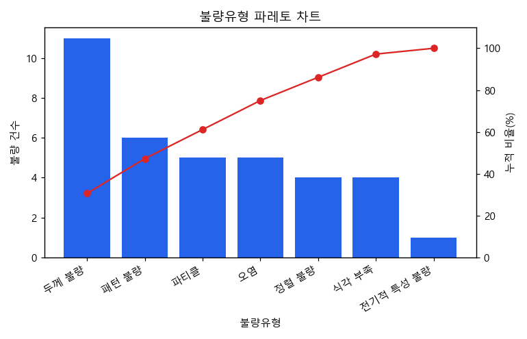
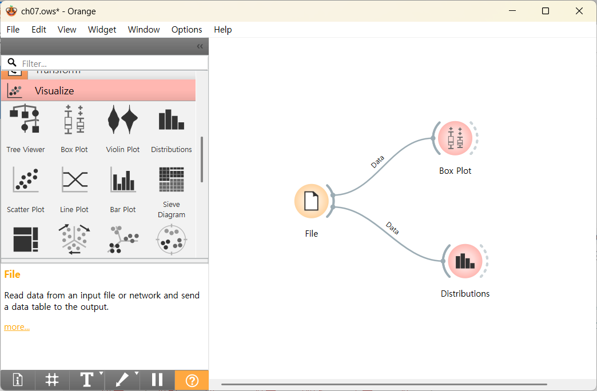
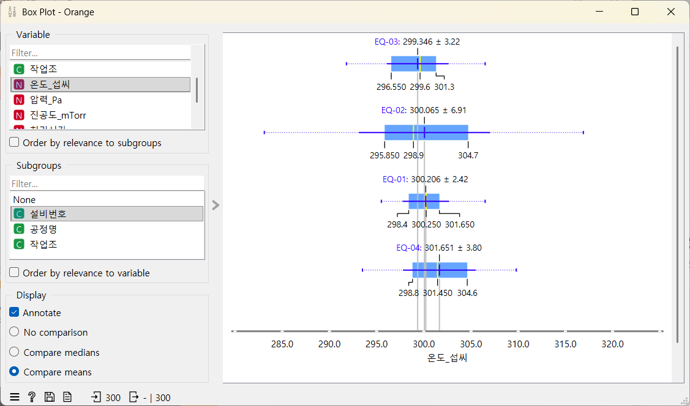
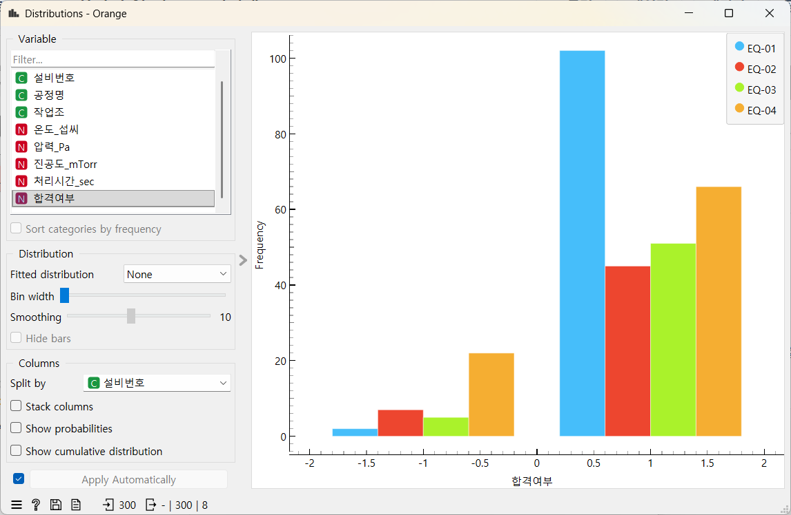

설비·공정 비교와 수율·불량 분석
오늘의 질문: "설비마다 차이가 있어 보이는데, 숫자로 계산해도 정말 그럴까?"
학습 목표
- 수율과 불량률이 "무엇 중에 무엇의 비율"인지 설명하고 계산할 수 있다.
- 데이터를 설비별로 "묶어서" 비교해야 하는 이유를 실제 수치로 설명할 수 있다.
groupby로 설비별·로트별 개수, 합격률, 평균을 계산할 수 있다.- 불량 유형을 많은 순으로 줄 세우고, 눈에 띄는 설비를 "원인"이 아니라 "원인 후보"로 말할 수 있다.
- 선수 지식 — 1차시: 여러 열 함께 보기·원인 후보 / 4차시: 조건 검색 / 5차시: True를 1로 세기(
sum()) / 6차시: 막대그래프
왜 이걸 배워야 할까?
- 공장의 단골 질문은 "어느 설비를 먼저 점검하지?"다. 답하려면 기록을 설비별로 묶어서 비교해야 한다.
- 전체로 보면 괜찮아도 나눠 보면 한 곳만 나쁠 수 있다. 이 "나눠 보기"를
groupby한 줄로 한다.
지난 시간 복습
- 1차시: 여러 열을 함께 보면 질문이 생기고, 눈에 띄는 것은 범인이 아니라 용의자(원인 후보)다.
- 6차시: 그림은 인상을 준다. 오늘은 그 인상을 숫자로 바꾼다.
오늘 데이터 다시 보기 — 열마다 공장에서 뜻하는 것
week07_equipment_yield.csv(300행 11열): 웨이퍼 4장씩 담은 로트 75개의 검사 기록이다. 교육용 가상 데이터다.
| 열 이름 | 공장에서 뜻하는 것 | 생활 속 비유 |
|---|---|---|
로트번호 | 함께 옮기고 관리한 웨이퍼 묶음의 번호. 실제 공장의 로트는 보통 25장 안팎이고, 이 데이터는 연습용으로 한 묶음에 4장이다 | 택배 상자 송장 번호 |
웨이퍼번호 | 로트 안에서 몇 번째 웨이퍼인지(1~4) | 상자 안 물건 순번 |
설비번호 | 작업한 기계(EQ-01~EQ-04) | 같은 메뉴를 만드는 가게 지점 |
공정명 | 어떤 작업이었는지(산화·포토·식각·증착·세정) | 요리의 썰기·굽기·씻기 |
작업조 | 그 시간에 근무한 교대 근무팀(A·B·C조) | 오전·오후·야간 근무팀 |
온도_섭씨 · 압력_Pa · 진공도_mTorr | 설비 안 센서가 잰 값(진공도는 낮을수록 공기를 더 많이 뺀 상태). 가상 값이라 크기는 해석하지 않고 기록끼리 비교만 한다 | 체온계·혈압계 숫자 |
처리시간_sec | 작업에 걸린 시간(초) | 조리 시간 |
불량유형 | 불합격일 때 어떤 종류의 불량인지. 합격이면 빈칸(NaN) | 반품 사유 |
합격여부 | 검사 결과. 1 = 합격, -1 = 불합격 | 상품 / 불량품 판정 |
압력_Pa와 다른 단위이므로 숫자를 서로 비교하지 않는다.
| 표기 | 읽는 법 | 뜻 |
|---|---|---|
mTorr (진공도_mTorr) | 밀리토르 | 아주 낮은 압력의 단위. 값이 작을수록 챔버 안 공기를 더 많이 뺀 상태(진공에 가깝다) |
불량 유형: 두께 불량(막 두께가 기준을 벗어남) · 패턴 불량(회로 무늬가 틀어짐) · 파티클(작은 이물 알갱이) · 오염(있으면 안 되는 물질) · 정렬 불량(위아래 층 무늬가 어긋남) · 식각 부족(덜 깎임) · 전기적 특성 불량(전기 검사 기준 벗어남).
불량유형은 검사에서 발견된 불량의 종류다. 같은 줄의 공정명 작업 때문에 생겼다는 뜻은 아니다.
먼저 연습할 생활 데이터 — 반별 쪽지시험
코드는 쪽지시험 기록(week07_easy_quiz_results.csv, 6명 × 4문항 = 24줄, 수업용 가상 데이터)으로 먼저 따라 한다.
학생 1명 = 4줄이라 로트 1개 = 웨이퍼 4장과 모양이 같다. 열 이름만 바꾸면 같은 코드가 통한다.
| 쪽지시험 열 | 뜻 | 반도체 데이터의 짝 |
|---|---|---|
반 | A반·B반·C반 | 설비번호 |
이름 | 학생 이름(반마다 2명) | 로트번호 |
문제번호 | 몇 번 문항인지(1~4) | 웨이퍼번호 |
풀이시간_초 | 그 문항을 푸는 데 걸린 시간(초) | 온도_섭씨 같은 숫자 열 |
오답유형 | 틀린 이유(계산 실수·문제 잘못 읽음·개념 부족). 맞았으면 빈칸(NaN) | 불량유형 |
정답여부 | 1 = 정답, -1 = 오답 | 합격여부(1 = 합격, -1 = 불합격) |
수율과 불량률 — 사과 100개 중 상품 92개
- 사과 100개 중 상품 92개, 흠집 8개 → 수율 92 ÷ 100 × 100 = 92%, 불량률 8 ÷ 100 × 100 = 8%. "무엇 중에 무엇"인지(분모)를 빼면 뜻이 사라진다.
- 반도체 데이터도 같다. 검사한 웨이퍼 중 합격 비율이 수율이다. 판정이 합격/불합격 두 가지뿐이라 수율 + 불량률 = 100%다.
- 이 과정은 웨이퍼 1장 = 검사 1건으로 단순화했다(실제 공장은 칩 단위로 세는 경우가 많다). 계산은 모두 "합격 장수 ÷ 검사 장수 × 100"으로 같고, 설비별로 묶으면 합격률, 로트별로 묶으면 로트 수율이라 부른다.
왜 묶어서 비교할까 — 전체 평균 속에 숨은 차이
왜 여러 열을 같이 볼까 — 열 하나만 보면 놓치는 것
| 함께 본 열 | 보이는 것 | 이 열만 봤다면 |
|---|---|---|
정답여부 하나만 | 24문항 중 18문항 정답(75.0%) | "괜찮다"로 끝난다 |
+ 반 | B반만 62.5%로 가장 낮다 | 어느 반부터 볼지 모른다 |
+ 풀이시간_초 | 반별 평균 61.2~76.9초, B반이 가장 길다 | B반이 오래 걸린다는 것을 모른다 |
+ 이름 | B반 두 학생 중 예린만 25%다(서준은 100%) | "B반은 모두 못 했다"고 오해한다 |
+ 오답유형 | 오답 6개 중 계산 실수가 3개로 가장 많다 | 무엇부터 고칠지 모른다 |
비교할 때 조심할 점
- 개수가 아니라 비율로: 문항이 8개인 반과 100개인 반의 정답 "개수"를 그대로 비교하지 않는다. 정답률로 비교한다.
- 건수가 적으면 비율이 흔들린다(리뷰 2개짜리 별점 5.0처럼): 4문항인 학생은 1문항만 더 틀려도 100% → 75%로 25%p (퍼센트포인트: 숫자가 100에서 75로 25 줄었다는 뜻), 8문항인 A반은 87.5% → 75.0%로 12.5%p 떨어진다. 비율 옆에 몇 개 중의 비율인지 함께 적는다.
- 눈에 띈다고 "원인"이라 단정하지 않는다: 눈에 띄는 것은 범인이 아니라 용의자, 즉 원인 후보다.
groupby — 같은 이름표끼리 모아서 바구니마다 계산
- 같은 값(이름표)을 가진 줄끼리 한 바구니에 모은 뒤, 바구니마다
count()(개수)·sum()(합계)·mean()(평균)을 계산한다. - 계산을 붙이지 않으면 숫자가 나오지 않는다.
quiz.groupby("반")["정답"].mean() * 100이 하는 일. True는 1, False는 0이라 A반은 7 ÷ 8 × 100 = 87.5%다.
반도체에서는 이름표 자리에 "설비번호", "로트번호"를 넣는다.
quiz.groupby("반")["정답"].mean() = "표 quiz를 → 반끼리 모아서 → 정답 열의 → 평균".
파레토 차트 — 많은 것부터 줄 세우기
- 불량 유형을 많은 순서로 세운 막대에 누적 비율 선을 겹친 그림이 파레토 차트다. 맨 앞 몇 개가 큰 몫을 차지한다.
- 누적 비율은 맨 앞부터 차례로 더해 간 비율이다. 오늘 불량 36건: 두께 불량 11 ÷ 36 = 30.6% → 패턴 불량 6을 더해 17 ÷ 36 = 47.2% → 파티클 5를 더해 22 ÷ 36 = 약 61.1%(파티클과 오염은 5건으로 같아 어느 쪽을 넣어도 22건이다). 손댈 순서는 맨 앞(두께 불량)부터다.

오늘 데이터의 불량 유형 파레토 차트(누적선은 강사가 미리 그린 것). 막대 부분은 실습지 문제 8에서 직접 그린다. 가장 많이 나온 불량은 줄일 순서를 알려줄 뿐, 원인을 알려주지는 않는다.
Orange3로 먼저 훑어보기
- Box Plot으로 설비별 온도 분포를, Distributions(Variable
설비번호, Split by합격여부)로 설비별 합격/불합격 개수를 본다. 합격여부는 File 위젯에서 Type을 categorical로 바꿔야 Split by 목록에 나타난다. 사용법: 부록: Orange3 시작하기



그림으로 받은 인상은 "짐작"이다. 아래에서 groupby로 숫자를 계산해 확인한다.
파이썬 ① — 데이터 읽고 정답 열 만들기
파이썬 개념은 쪽지시험 데이터(쉬운 예제)로 익힌다. 반도체 데이터는 뒤의 "반도체 데이터로 확인하기"와 실습지에서 다룬다.
import pandas as pd
quiz = pd.read_csv("../../data/weekly/week07/week07_easy_quiz_results.csv", encoding="utf-8-sig")
print(quiz.shape)
print(quiz.head(8))(24, 6)
반 이름 문제번호 풀이시간_초 오답유형 정답여부
0 A반 지민 1 45 NaN 1
1 A반 지민 2 60 NaN 1
2 A반 지민 3 52 NaN 1
3 A반 지민 4 70 NaN 1
4 A반 하은 1 50 NaN 1
5 A반 하은 2 65 NaN 1
6 A반 하은 3 90 계산 실수 -1
7 A반 하은 4 58 NaN 1
오른쪽 quiz["정답여부"] == 1은 줄마다 1이면 True, 아니면 False를 만든다(4차시 조건 검색의 대괄호 안쪽과 같다).
왼쪽 quiz["정답"] =은 그 결과를 정답이라는 새 열로 저장한다. =는 저장, ==는 비교다.
True는 1, False는 0이라 sum()은 맞힌 수, mean()은 정답 비율이다.
quiz["정답"] = quiz["정답여부"] == 1
print(quiz["정답"].sum(), "문항 정답")
print(quiz["정답"].mean() * 100)18 문항 정답 75.0
정답여부·합격여부는 1 = 정답(합격), -1 = 오답(불합격)이다. 바로 평균 내면 비율이 아니므로 True/False 열을 먼저 만든다.
파이썬 ② — groupby로 반별 비교하기
print(quiz.groupby("반")["정답"].count())
print(quiz.groupby("반")["정답"].sum())
class_rate = quiz.groupby("반")["정답"].mean() * 100
print(class_rate.round(1))반 A반 8 B반 8 C반 8 Name: 정답, dtype: int64 반 A반 7 B반 5 C반 6 Name: 정답, dtype: int64 반 A반 87.5 B반 62.5 C반 75.0 Name: 정답, dtype: float64
맨 위 반은 이름표 열, Name: 정답은 계산한 열이다. .round(1)은 소수 첫째 자리까지 반올림한다.
다른 열도 대괄호 안 이름만 바꾸면 같은 방법으로 묶는다.
print(quiz.groupby("반")["풀이시간_초"].mean().round(1))반 A반 61.2 B반 76.9 C반 67.8 Name: 풀이시간_초, dtype: float64
파이썬 ③ — 학생별로 묶기(로트별 수율과 같은 계산)
이름표를 "이름"으로 바꾼다. 한 학생이 4문항이라 정답률은 0·25·50·75·100% 중 하나다(로트 수율도 같다).
stu_rate = quiz.groupby("이름")["정답"].mean() * 100
print(stu_rate)
print((stu_rate < 80).sum(), "명이 정답률 80% 미만")이름 도윤 75.0 서준 100.0 시우 75.0 예린 25.0 지민 100.0 하은 75.0 Name: 정답, dtype: float64 4 명이 정답률 80% 미만
stu_rate < 80은 학생마다 True/False를 만들고, .sum()이 True(=1)만 센다(5차시 isna().sum()과 같은 원리). 괄호가 있어야 비교를 먼저 한다.
stu_rate는 숫자 한 줄(Series)이라 열 이름 없이 sort_values()만 쓴다. 기본은 작은 값부터라 head(1)이 가장 낮은 학생이다. 그 학생의 기록을 여러 열과 함께 본다.
둘째 줄 끝의 [["반", "문제번호", ...]]처럼 대괄호를 두 겹 쓰면 여러 열을 골라 표로 본다. 안쪽 대괄호가 열 이름 목록이다(열 하나는 ["반"], 여러 개는 [["반", "문제번호"]]).
print(stu_rate.sort_values().head(1))
print(quiz[quiz["이름"] == "예린"][["반", "문제번호", "풀이시간_초", "오답유형"]])이름
예린 25.0
Name: 정답, dtype: float64
반 문제번호 풀이시간_초 오답유형
12 B반 1 85 문제 잘못 읽음
13 B반 2 110 계산 실수
14 B반 3 95 NaN
15 B반 4 120 개념 부족
B반만 골라(4차시 조건 검색) 같은 계산을 하고, value_counts()로 정답률마다 몇 명인지 센다.
b_class = quiz[quiz["반"] == "B반"]
b_stu_rate = b_class.groupby("이름")["정답"].mean() * 100
print(b_stu_rate.value_counts())정답 100.0 1 25.0 1 Name: count, dtype: int64
왼쪽은 정답률 값, 오른쪽은 그 정답률인 학생 수다(맨 위 정답은 원래 열 이름). B반 62.5%는 두 학생이 고르게 낮은 게 아니라 한 학생(예린 25%)이 크게 낮았던 것이다.
파이썬 ④ — 오답 유형 줄 세우기(파레토)
오답(-1)만 골라 오답유형을 센다. value_counts()(6차시)는 많은 순서로 줄을 세운다.
wrong_counts = quiz[quiz["정답여부"] == -1]["오답유형"].value_counts()
print(wrong_counts)오답유형 계산 실수 3 문제 잘못 읽음 2 개념 부족 1 Name: count, dtype: int64
import matplotlib.pyplot as plt
plt.rcParams["font.family"] = "Malgun Gothic"
plt.rcParams["axes.unicode_minus"] = False
plt.bar(wrong_counts.index, wrong_counts)
plt.xticks(rotation=45)
plt.xlabel("오답유형")
plt.ylabel("오답 수")
plt.show()wrong_counts.index는 막대 아래 이름표, wrong_counts는 막대 높이다. plt.xticks(rotation=45)는 이름표를 45도 기울인다.
반도체 데이터로 확인하기
같은 코드에서 표·열 이름만 바꿔(quiz → df, 반 → 설비번호, 이름 → 로트번호, 정답 → 합격) 오늘의 질문에 답한다.
확인 1 — 설비마다 합격률이 정말 다를까?
df = pd.read_csv("../../data/weekly/week07/week07_equipment_yield.csv", encoding="utf-8-sig")
print(df.shape)
df["합격"] = df["합격여부"] == 1
print(df["합격"].sum(), "장 합격")
print(df["합격"].mean() * 100)(300, 11) 264 장 합격 88.0
pass_rate = df.groupby("설비번호")["합격"].mean() * 100
print(pass_rate.round(1))설비번호 EQ-01 98.1 EQ-02 86.5 EQ-03 91.1 EQ-04 75.0 Name: 합격, dtype: float64
공장 말로 읽기: 전체 88.0% 안에 98.1%짜리와 75.0%짜리 설비가 섞여 있다. EQ-04(88장 중 66장)부터 살펴본다. 장수도 함께 본다: EQ-02(52장)는 1장만 더 불합격해도 86.5% → 84.6%(약 1.9%p), EQ-01(104장)은 98.1% → 97.1%(약 1.0%p) 떨어진다. 평균 온도는 설비마다 299.3~301.7℃로 비슷해(실습지 문제 4) 온도 평균만으로는 EQ-04를 찾지 못한다.
확인 2 — 수율이 가장 낮은 로트는 어느 설비에서 나왔을까?
lot_yield = df.groupby("로트번호")["합격"].mean() * 100
print(lot_yield.head())
print((lot_yield < 80).sum(), "개 로트가 수율 80% 미만")
print(lot_yield.sort_values().head(1))
print(df[df["로트번호"] == "LOT-0008"][["설비번호", "공정명", "작업조", "불량유형"]])로트번호
LOT-0001 100.0
LOT-0002 100.0
LOT-0003 100.0
LOT-0004 100.0
LOT-0005 100.0
Name: 합격, dtype: float64
21 개 로트가 수율 80% 미만
로트번호
LOT-0008 0.0
Name: 합격, dtype: float64
설비번호 공정명 작업조 불량유형
28 EQ-04 증착 B조 정렬 불량
29 EQ-04 증착 B조 두께 불량
30 EQ-04 증착 B조 패턴 불량
31 EQ-04 증착 B조 파티클
공장 말로 읽기: 75개 중 21개 로트가 80% 미만(연습용 기준)이고, 최저 LOT-0008(0%)도 EQ-04다. 하지만 이 로트는 증착 작업이고 B조가 맡았다. 로트 하나로는 무엇 탓인지 가릴 수 없다.
확인 3 — EQ-04는 늘 나쁠까?
eq04 = df[df["설비번호"] == "EQ-04"]
eq04_lot_yield = eq04.groupby("로트번호")["합격"].mean() * 100
print(eq04_lot_yield.value_counts())합격 100.0 11 75.0 4 50.0 4 25.0 2 0.0 1 Name: count, dtype: int64
공장 말로 읽기: EQ-04 로트 22개 중 11개는 100%, 80% 미만은 4 + 4 + 2 + 1 = 11개다. 쪽지시험 B반처럼 일부에서만 크게 나빴다.
실습: 묶어서 비교하기 따라 하기
week07_student.ipynb를 위에서 아래로 실행하고 ____를 채운다. 반도체 문제는 실습지 문제 1~9와 같다.
핵심 용어 카드
수율
- 한 줄 설명
- 만든(검사한) 것 중 정상 제품의 비율.
- 데이터에서의 예
- LOT-0001은 4장 중 4장 합격 → 로트 수율 100%. LOT-0008은 0%.
불량률
- 한 줄 설명
- 검사한 것 중 불량의 비율.
- 데이터에서의 예
- 300장 중 불합격 36장 → 12.0%.
groupby
- 한 줄 설명
- 같은 값(이름표)을 가진 줄끼리 모아, 모음마다 계산하게 해 주는 기능.
- 데이터에서의 예
df.groupby("설비번호")["합격"].mean()
합격률 vs 로트 수율
- 한 줄 설명
- 계산은 같고 묶는 기준만 다르다. 설비별로 묶으면 합격률, 로트별로 묶으면 로트 수율.
- 데이터에서의 예
- EQ-04 합격률은 75.0%지만, EQ-04 로트 22개 중 11개는 수율 100%다.
파레토 차트
- 한 줄 설명
- 많은 순서로 세운 막대그래프에 누적 비율 선을 겹친 그림.
- 데이터에서의 예
- 불량 유형 7가지 중 상위 3가지가 불량 36건의 약 61.1%.
원인 후보
- 한 줄 설명
- "이것 때문일 수도 있다"고 보여 더 확인해 볼 대상(범인이 아니라 용의자).
- 데이터에서의 예
- EQ-04: 합격률 75.0%로 가장 낮고, 수율 80% 미만 로트 21개 중 11개.
데이터
data/weekly/week07/week07_equipment_yield.csv— 300행(로트 75개 × 웨이퍼 4장) 11열, 교육용 가상 데이터data/weekly/week07/week07_easy_quiz_results.csv— 쉬운 예제용 쪽지시험 24행 6열, 생활 예제용 가상 데이터- 열마다 자세한 뜻: 데이터 설명서
주의할 점 & 자주 발생하는 오류
| 이렇게 쓰면 | 나오는 오류 | 고치는 법 |
|---|---|---|
df.groupby("설비번호", "온도_섭씨") | ValueError: level name 온도_섭씨 is not the name of the index | 계산할 열은 대괄호로 따로: df.groupby("설비번호")["온도_섭씨"].mean() |
df.groupby("설비번호")["온도"].mean() | KeyError: 'Column not found: 온도' | 정확한 열 이름(온도_섭씨). print(df.columns)로 확인 |
df.groupby("설비번호").mean() | TypeError: dtype 'str' does not support operation 'mean' | ["온도_섭씨"]처럼 숫자 열을 고른다 |
df[df["설비번호"] == EQ-04] | SyntaxError: leading zeros in decimal integer literals are not permitted | 글자는 따옴표로: "EQ-04" |
- 계산을 안 붙이면(
print(df.groupby("설비번호")["합격"]))<pandas.api.typing.SeriesGroupBy object at 0x...>만 나온다..mean()등을 붙인다. df.groupby("설비번호")["합격여부"].mean()은 EQ-04가 0.5다(1과 -1의 평균).합격열을 먼저 만든다.
결과 정리 & 퀴즈
더 많은 문제는 실습지에 있다.
quiz.groupby("반")["정답"].mean() * 100을 반도체 데이터에 적용하면 df.groupby(____)["합격"].mean() * 100이다. 빈칸은?"설비번호". 코드 모양은 그대로이고 열 이름만 바뀐다.AI로 한 걸음 더 — 질문하고 코드 받아보기
- "pandas의 groupby를 택배 분류 센터에 비유해서 3줄로 설명해주세요."
- "수율과 불량률은 어떻게 계산하나요? 사과 따기 예시로 알려주세요."
- "파레토 차트는 왜 많은 것부터 줄을 세우나요?"
파이썬 pandas의 groupby를 프로그래밍을 처음 배우는 사람에게 택배 분류 센터 비유로 3줄 안에 설명해줘. groupby만 쓰고 .mean()을 안 붙이면 왜 숫자가 안 나오는지도 같은 비유로 알려줘.확인: 답에 "① 모으기 → ② 모음마다 계산하기" 두 단계가 다 있는가?
for eq, rate in pass_rate.items():
if rate < 90:
print(f"{eq} 합격률 {rate:.1f}% → 점검 필요")
else:
print(f"{eq} 합격률 {rate:.1f}% → 정상")EQ-01 합격률 98.1% → 정상 EQ-02 합격률 86.5% → 점검 필요 EQ-03 합격률 91.1% → 정상 EQ-04 합격률 75.0% → 점검 필요
.items()는 "설비 이름과 합격률을 한 쌍씩 꺼낸다" 정도로 읽는다(for·if는 3차시).- AI 코드가
pass_rate = ...로 값을 바꿨다면 노트북 5단계 문제 3 셀을 다시 실행한다.
과제(다음 차시까지)
노트북 한 개에 작성하고, 결과가 출력된 상태로 제출한다.
- 과제 1 — 공정별 비교:
df.groupby("공정명")["합격"].mean() * 100과count()로 합격률이 가장 낮은 공정과 그 장수를 적는다. - 과제 2 — 작업조별 비교:
shift_rate = df.groupby("작업조")["합격"].mean() * 100후print(shift_rate.round(1))로 A·B·C조 합격률을 보고, 가장 낮은 조를 한 문장으로 적는다. - 과제 3 — 내 말로 설명하기: "왜 묶어서 비교하나", "왜 비율 옆에 장수를 보나"를 오늘 숫자를 넣어 각각 두세 문장으로 적는다.
핵심 질문 → 데이터 연결
- 질문: Orange3의 인상과
groupby수치가 같은가? 불량률이 가장 높은 설비와 수율이 가장 낮은 로트는 같은 설비인가? - 답: EQ-04가 합격률 75.0%(불량률 25.0%)로 가장 낮고, 최저 수율 로트 LOT-0008(0%)도 EQ-04다. 하지만 EQ-04 로트 절반은 100%이고 LOT-0008에는 증착·B조도 함께 있어, EQ-04는 "원인 후보"까지다.
다음 차시 예고
8차시에는 온도와 두께처럼 숫자 두 열이 함께 움직이는지 재는 법을 배워, 여러 용의자 중 "원인 후보"를 좁혀 본다.